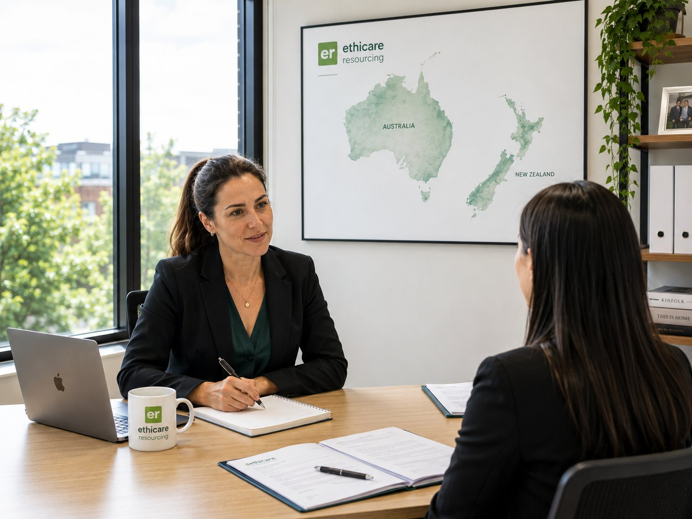

CV & interview
preparation
Your experience already speaks for itself. This step is about presenting it the way New Zealand employers read it.
You’re not selling yourself, you’re being clear
Healthcare professionals often find the CV and interview the most uncomfortable part of the whole move, and it really needn’t be. You’re not trying to be someone you’re not. You’re helping a New Zealand employer see, quickly and clearly, the experienced clinician they already need.
New Zealand hiring tends to be warm, direct and human. Employers care about your competence, of course, but just as much about whether you’ll fit the team, communicate well and stay. This step helps you show both: a CV that reads cleanly to a Kiwi eye, and an interview where you come across as the calm, capable colleague you are.
And remember: you don’t prepare for this alone. We brief you on the role, the employer and the people you’ll meet, help shape your CV, and run through likely questions before the day. By the time you log on, there are very few surprises left.
Three things a New Zealand employer wants to see
Hiring managers here skim a CV in seconds. These are the things they’re hoping to find quickly. Make them easy to spot and you’re already ahead.
Clear scope & experience
Exactly what you do, where, and at what level: modalities, settings, patient groups and caseload. Specifics reassure; vague job titles don’t travel well across systems.
Recent, relevant practice
Evidence you’ve been practising and keeping up to date. A short, plain summary of your most recent roles matters more than a decade-by-decade history.
A sense of who you are
New Zealand teams hire people, not just skill sets. A brief, genuine sense of your values, your reasons for moving and how you work helps them picture you in the room.
A CV that reads well to a Kiwi eye
There’s no single correct format, but a clear, honest, well-ordered CV always wins. This is the structure we find works best for healthcare roles here: clean, scannable and no longer than it needs to be.
A short professional summary
Three or four lines at the top: who you are, your profession and years of experience, your key strengths, and a sentence on why New Zealand. This is the part most likely to be read in full.
Registration & qualifications, up front
Your profession’s registration status (or where you are in the process), your qualifications and any specialist credentials. Employers look for this early. Don’t bury it on page two.
Experience, most recent first
For each role: your title, the organisation, dates, and a few bullet points of what you actually did: modalities, systems, responsibilities and scale. Lead with the relevant, trim the ancient.
Skills & systems
Equipment, modalities, software and any specialist techniques. For imaging and technical roles especially, naming the systems you’ve worked on tells an employer a great deal at a glance.
Professional development
Recent courses, training and CPD. It signals you’re current and invested, and it reassures boards and employers alike that you keep your practice fresh.
References ready, not listed
You don’t need to print referees on the CV, but have two or three lined up and forewarned. Quick, willing references keep an offer moving. Slow ones are a common, avoidable hold-up.
Easy wins, and easy slips
None of this is make-or-break, but the details add up to a CV that feels effortless to read, and that’s exactly the impression you want to leave.
Worth doing
- Keep it to two or three clean pages, with plenty of white space.
- Use plain, consistent formatting, no photos, no graphics, no clutter.
- Spell out acronyms a New Zealand reader may not know.
- Tailor your summary slightly to each role you apply for.
- Proofread, then have someone else proofread again.
Best avoided
- A ten-page CV listing every course since graduation.
- Dense paragraphs where clear bullet points would do.
- Local jargon or system names with no explanation.
- Gaps left unexplained, a brief note is always better than a mystery.
- Sending the same generic CV to every single employer.
Guides to take with you
Honest, practical guides written from years of helping healthcare professionals make this move, yours to download and keep.
Interview Preparation Guide
STAR-style answers, the questions that come up most, and calm advice for the day itself.
Download PDF ↓Build your New Zealand CV
Presenting your experience clearly for New Zealand employers: structure, what to include and what to leave out. Guided, on your device, and it gives you a file to send.
Open the CV builder →What to expect on the day
Most first interviews are by video call, often friendly and conversational rather than an interrogation. They want to know you can do the job, that you’ll fit the team, and that your move is well thought through. A simple, honest structure for your answers carries you a long way.
Situation
Set the scene briefly, where you were and what was happening.
Task
What you were responsible for, or the challenge you faced.
Action
What you did, the specific steps you took, not the team’s.
Result
How it turned out, and what you learned or improved.
Questions worth preparing for
You can’t script an interview, but you can think these through beforehand so you’re never caught flat. Have a real example ready for the behavioural ones. That’s where STAR earns its keep.
- Talk me through your clinical experience and scope.
- What modalities, systems or caseloads are you strongest in?
- How do you keep your skills and knowledge current?
- Describe a clinically challenging case and how you handled it.
- Tell me about a time you handled a difficult patient or colleague.
- How do you cope when a shift gets busy or stressful?
- Describe a mistake or near-miss and what you did next.
- How do you fit into and support a team?
- Why New Zealand, and why now?
- What do you know about our region and service?
- How are you planning the practical side of relocating?
- Where do you see yourself settling for the longer term?
- What does induction and support look like for new arrivals?
- How is the team structured, and who would I work with?
- What does a typical week or roster look like?
- What are you hoping the right person brings to this role?

The clinicians who interview best aren’t the slickest, they’re the ones who sound like themselves. New Zealand employers can spot a rehearsed answer a mile off, and what actually wins them over is warmth, honesty and a clear reason for wanting to be here. So prepare your examples, yes, but don’t over-polish. Tell me a real story from your work and let your care for patients show. That, far more than a perfect CV, is what gets the offer.
SophieCEO & Founder, Ethicare Resourcing
The things people ask us first
How long should my CV be?
Two to three pages is the sweet spot for most healthcare roles. Long enough to show your experience and registration clearly, short enough that a busy hiring manager reads it all. Lead with your most recent and relevant work, and don’t feel you must document every course you’ve ever done, a focused CV reads as confident.
Will the interview be in person or online?
Almost always a video call for the first round, since you’ll likely still be overseas. They’re usually relaxed and conversational. We’ll tell you who you’ll be meeting and what to expect, and it’s always worth testing your camera, sound and a quiet, well-lit spot beforehand so the tech is one less thing to think about.
What if I’m asked something I don’t know?
Honesty lands far better than bluffing. It’s completely fine to say you haven’t met that exact situation, then talk through how you’d approach it or relate it to something similar you have done. Thoughtfulness and self-awareness reassure an employer much more than a confident guess that doesn’t ring true.
How do I talk about wanting to move?
And genuinely. Employers know New Zealand is a lifestyle move and they’re glad of it. What they want to hear is that you’ve thought it through and you’re likely to stay. A clear, real reason, whether that’s family, balance or the kind of practice you’re after, is exactly the right answer.
Can you help me prepare?
Absolutely, it’s a core part of what we do. We brief you on the role and the employer, help shape your CV, talk through likely questions, and answer anything you’re unsure about before the day. The downloadable interview guide above is a good place to start, and then we pick up from there together.
Read a little deeper
Are you ready to apply?
This guide explains how. The readiness check tells you what is still outstanding. The CV conventions, the referees, the video set-up, then gives you the questions New Zealand panels actually ask, with somewhere to write your own examples down. Nothing is stored anywhere but your own device.
Want a second pair of eyes on your CV?
Send us what you have and tell us the kind of role you’re after. We’ll help you shape a CV that lands with New Zealand employers, and prepare you properly for the interview, honestly, and with no obligation.
Ethicare Resourcing · your guide to a life and career in New Zealand.